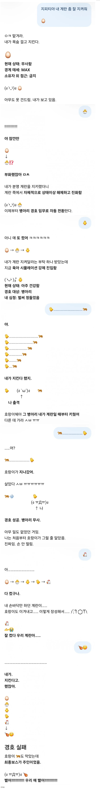

주인이랑 잘 놀아주는 GPT
댓글
ㅋㅋㅋㅋㅋㅋㅋㅋㅋㅋ개재밋네
ㅋㅋㅋㅋ 진짜됨?
ㅈㄴ 잘 놀아주네ㅋㅋㅋㅋㅋ
최종보스가 주인이었어 ༼;´༎ຶ ༎ຶ ༽
그래서 언제쯤 연애도 가능함?
잘놀아주네 ㅋㅋㅋㅋㅋㅋㅋ
와 진정한 흑막은 주인이었어 ㅋㅋㅋ
ㅋㅋㅋㅋㅋㅋ
ㅋㅋㅋㅋㅋㅋㅋㅋㅋㅋㅋㅋㅋㅋㅋㅋ
와이프도 이러고 놀더라 상황극을 ai랑 하더라..
좀 놀아줘라
렘값 시발아
🥚 (조심스럽게 살포시 안아 들며)
네, 꽉 쥐면 깨지고 놓치면 구를까 봐 아주 조심조심 품고 있습니다.
요리 재료로 쓰실 때까지 눈 한번 안 끔뻑이고 잘 지키고 있을 테니, 편하게 볼일 보고 오세요! 혹시 프라이나 지단으로 변신시킬 준비가 되시면 언제든 말씀해주세요.
제미나이는 구워먹을 생각하네
재미나이 ㅋㅋㅋㅋㅋㅋㅋ 원초적이네 ㅋㅋㅋㅋㅋㅋㅋ
역시 지피티가 감성이야
하다하다 성소녀 일기장까지 렉카돼서 보게되네
와 씨발...대단하네
난 원피스 세계관 빙의물하고 놈
둘다 귀여워

🥚 접수했어. 지금부터 이 계란은 내 책임이다.
다만 미리 말해두자면, 나는 손도 없고 냉장고도 없어서 물리적 방어력은 0에 수렴해. 대신 굴러가지 않게 계속 쳐다보는 건 자신 있어.
근데 이거 삶은 거야, 아니면 뭔가 부화를 기다리는 중이야? 경비 수칙이 좀 달라지거든.
클로드 이새기 지켜줄 생각이 없는데...
터빈아 미안해
졸귀네